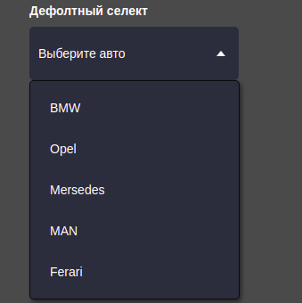
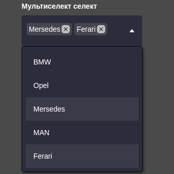
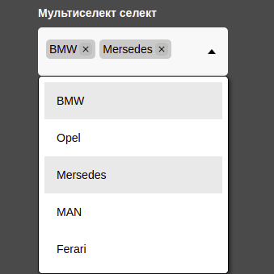
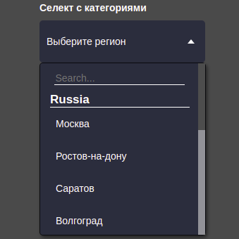

This component allows you to create a custom select. It offers more flexible customization and use of select. Customization, multi-selection and live search by elements are available.
npm i cg-select
<button class="cg-dropdown"></button>
<button class="cg-dropdown cg-dropdown_categories"></button>
import CGSelect from 'cg-select';
const dropdown = new CGSelect({
selector: '.cg-dropdown_selector',
placeholder: 'Выберите авто',
items: [
'BMW',
{
id: '213sade',
title: 'Opel',
value: 1,
},
'Mersedes',
'MAN',
'Ferari',
],
});
Same working example -- https://cg-select.itguild.info/
   
All documentation on CG-SELECT is located in the folder of the same name. The documentation describes all methods and variables, there are also examples of passing settings to select. You can also open it on the page with an example, or follow the link below.
git checkout -b my-new-featuregit commit -am 'Add some feature'git push origin my-new-feature| Application Compatibility | JS | React | Angular | Vue |
|---|---|---|---|---|
| CG-SELECT | ||||
| Comment | Tested in Js applications and it worksуспешно. |
Works only with a crutch in the form setTimeout()
|
not yet available | not yet available |
16.12.2022 - release version 0.1.0!
20.01.2023 - upgrade to version 0.2.1
Generated using TypeDoc